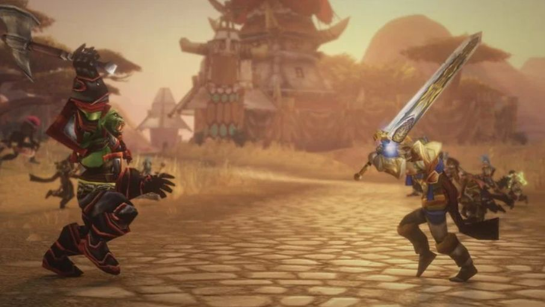
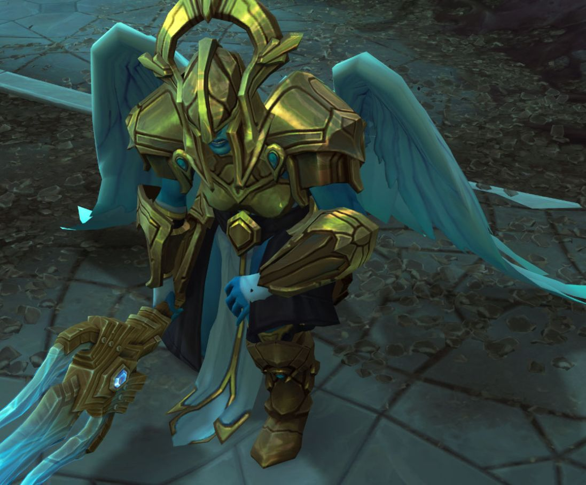
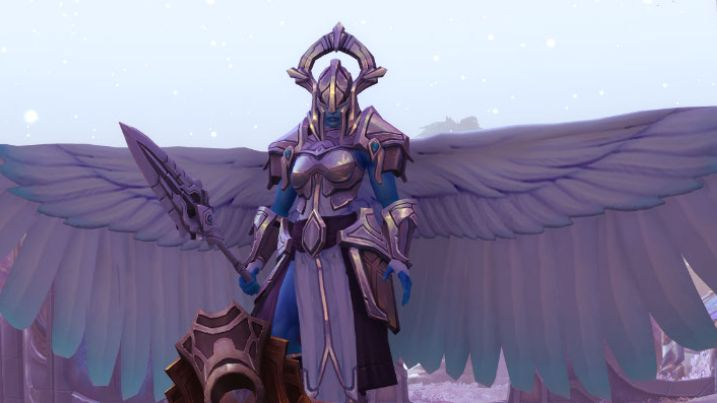
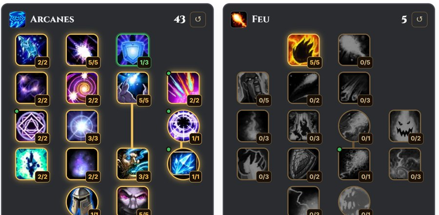
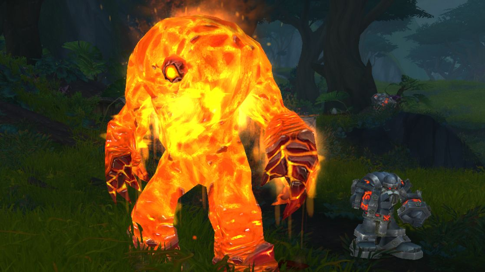
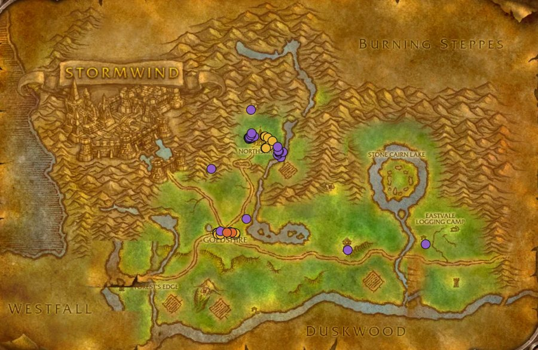

PvP Bien débuter
Bien débuter

Classes Donjons & Raids
Donjons & Raids

Legacy
Talents
Calendrier
Toutes les news

Correctifs du 17 novembre : pic Rochenoire, sac de couchage et paladin tank
Le pic Rochenoire supérieur redevient difficile, le sac de couchage donne l'aura Reposé et l'armure d'Âmeforge passe à la puissance des sorts.
Patch 1.60.1.70959 : le chaman Amélioration revu à la baisse
Frappe-tempête passe de 150 % à 100 % des dégâts de l'arme et l'Intelligence donne moins de puissance d'attaque. Le seul changement de ce petit patch.
Repaire des Noiregueules : Blizzard reprend l'or des gros farmeurs
Une erreur de butin rapportait plus de 100 po par heure. Or retiré et suspensions pour quelques centaines de joueurs. Et les nouveaux chiffres du lancement.

Correctifs du 16 novembre : Furie-des-vents, Étreinte vampirique et pêche
Le Totem Furie-des-vents est corrigé, l'Étreinte vampirique soigne moins le groupe, le guerrier Fureur est réparé et plusieurs quêtes pénibles deviennent plus simples.

Arnaque : attention aux faux liens d'objets en message privé
Un personnage de niveau 1 t'envoie un lien d'objet ? C'est une pub pour un vendeur d'or. Comment la reconnaître et la signaler.

Sac de couchage douillet : la chaîne de quêtes pas à pas
+3 % d'expérience et du repos n'importe où, dès le niveau 14 et sans combat. Les 5 étapes pour l'Alliance et la Horde, avec un sac de 12 places en chemin.

Quêtes de classe : les sorts et objets à ne pas rater
Forme d'ours, Poisons, totems, montures… Dans Forever, ils se gagnent par des quêtes. Comment les trouver en jeu et lesquelles faire en priorité, classe par classe.

Gelkis ou Magram : quel clan centaure choisir ?
En Désolace, aider un clan te fâche avec l'autre. Armes de niveau 35, recettes de métier : ce que chacun offre, et pourquoi il vaut mieux choisir une fois pour toutes.